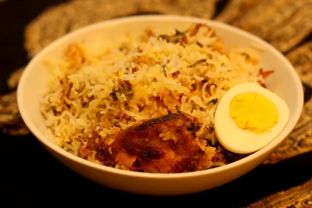

Back to home page
Kacchi Biryani

Description
Kacchi Biryani is a rich, aromatic South Asian rice dish where raw marinated meat is layered with partially cooked rice and slow-cooked to perfection, often using the "dum" method to infuse flavors. It is a staple in Bangladeshi, Indian, and Pakistani cuisines, with regional variations like Dhakai and Hyderabadi styles.
Ingredients
- Beef chunks: 1.5 kg (3.3 lbs)
- Ginger paste: 1.5 tsp (7.5 ml)
- Garlic paste: 3 tsp (15 ml)
- Dry red chili: 4
- Cinnamon stick: 2–3 inches (5–7.5 cm)
- Green cardamom: 8
- Cumin seeds: 1.5 tsp (7.5 ml)
- Fennel seeds: 1 tsp (5 ml)
- Coriander seeds: 1 tsp (5 ml)
- Cloves: 1 tsp (5 ml)
- Mace: 1 tsp (5 ml)
- Nutmeg: ½ tsp (2.5 ml)
- Yogurt: 1.5 cups (360 ml)
- Ghee or butter: ¾ cup (180 ml)
- Potatoes: 4 medium (quartered)
- Orange or yellow food color: 3 tbsp (45 ml)
- Onions: 1 cup (thinly sliced)
- Basmati rice: 4 cups (800 g)
- Water: 6 cups (1.4 L)
- Milk: ½ cup (120 ml)
- Saffron: Pinch
- Prunes: 12 (pitted)
- Salt: To taste
Steps
- Wash the rice and soak it in water for 20 minutes. Drain and set aside.
- Wash the beef and dry it thoroughly with a paper towel.
- Dry roast cumin, fennel, coriander seeds, cinnamon, cloves, chili, mace, and cardamom. Grind into a fine powder using a mortar and pestle or mini chopper.
- In a large bowl, combine the yogurt, ground spice mix, ginger paste, garlic paste, salt, and beef. Mix well and marinate for at least 30 minutes, preferably overnight.
- Soak the sliced onions in ¾ of the milk and gently fry in ghee until golden brown. Drain and set aside.
- Rub the potatoes with food color and fry until half done. Set aside.
- Soak saffron strands in the remaining milk and set aside.
- Layer the casserole in this order: marinated meat, half-cooked potatoes, fried onions, prunes, and the soaked rice. Add water and saffron-infused milk.
- Seal the casserole tightly with foil and cover with the lid. Cook on low heat for 2 hours, ensuring the seal remains intact.